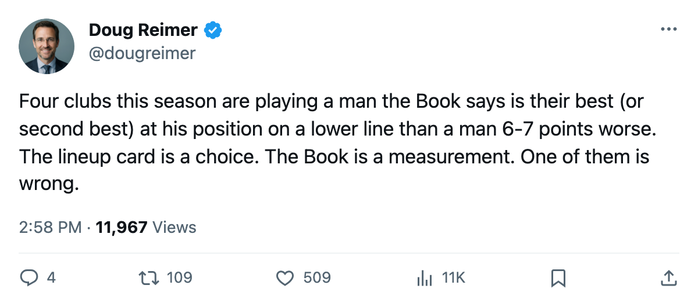
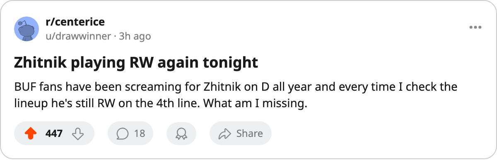

The Mis-Slotted Seven: 4 Clubs Park Graded Defensemen and Centers on the Wrong Line
The Bureau flags 7 mis-slots this season. Four involve same-position comparisons where the grade gap is 6 or 7 points, and 3 of those 4 sit at clubs fighting for the eighth playoff spot.
 Doug ReimerAnalytics editor, ex-video coach · The Slot Report
Doug ReimerAnalytics editor, ex-video coach · The Slot Report
The Bureau's lineup audit flags 7 mis-slots this season: a third- or fourth-liner whose Book grade exceeds a top-six man at his own position. I stripped out the 3 at  Toronto Maple Leafs (all flagged against a 51-rated defenseman playing top pair, a cross-position comparison that doesn't test allocation the way a center-buried-below-a-66 does) and ranked the remaining 4 by the grade gap between the buried man and the one playing ahead of him.
Toronto Maple Leafs (all flagged against a 51-rated defenseman playing top pair, a cross-position comparison that doesn't test allocation the way a center-buried-below-a-66 does) and ranked the remaining 4 by the grade gap between the buried man and the one playing ahead of him.
The method is simple. The Bureau's Book gives every player an overall grade. The lineup card assigns slots. When a player rated 81 plays fourth-line right wing while men rated 73 and 75 play top-pair defense at the same club, the lineup card contradicts the grade sheet. I'm measuring the contradiction.
The Zhitnik problem is the largest single mis-slot in hockey
 Alexei Zhitnik83 at
Alexei Zhitnik83 at  Buffalo Sabres grades 81. That puts him 6 points above
Buffalo Sabres grades 81. That puts him 6 points above  Jay McKee77 (75) and 8 points above
Jay McKee77 (75) and 8 points above  Brad Bombardir75 (73), who play first and second-pair defense. The lineup card puts Zhitnik on right wing, fourth line. An 81-rated defenseman playing 4th-line RW while two defensemen rated 73 and 75 play his position, with the club chasing the eighth spot.
Brad Bombardir75 (73), who play first and second-pair defense. The lineup card puts Zhitnik on right wing, fourth line. An 81-rated defenseman playing 4th-line RW while two defensemen rated 73 and 75 play his position, with the club chasing the eighth spot.
Buffalo Sabres sits 9th in the East at 62 points, 2 behind  New York Islanders in 8th, with 21 games left. Their max is 104, the 8th club's is 64. They need every point they can manufacture, and they're leaving one of their best skaters on a line where his puck-moving (98 PUCK, 88 SHPW in the Book) goes unused on the blue line.
New York Islanders in 8th, with 21 games left. Their max is 104, the 8th club's is 64. They need every point they can manufacture, and they're leaving one of their best skaters on a line where his puck-moving (98 PUCK, 88 SHPW in the Book) goes unused on the blue line.
Zhitnik has appeared on the injury list twice this season (one unnamed, one groin). The rest of the time he plays RW.
WSH buries two 75-plus defensemen below a 69
At  Washington Capitals, the pattern repeats on defense. Jason Doig70 grades 76 and
Washington Capitals, the pattern repeats on defense. Jason Doig70 grades 76 and  Sylvain Cote69 grades 75. Both play third or fourth pair: Doig on 31RD and 42RD with PK work, Cote on 32LD and K2LD.
Sylvain Cote69 grades 75. Both play third or fourth pair: Doig on 31RD and 42RD with PK work, Cote on 32LD and K2LD.  Wade Belak63, graded 69, plays second-pair right defense (L2RD).
Wade Belak63, graded 69, plays second-pair right defense (L2RD).
The gap is 7 points for Doig, 6 for Cote. That's a full letter grade between the men playing top six and the men sitting in the press box rotation. Washington Capitals is 4th in the East at 79 points with 18 games left, so the mis-slot hasn't cost them a playoff spot. It may have cost them depth in a series.
Both Cote and Doig have been on the injury list (Cote once unnamed and once on a leg, Doig once unnamed). Belak has been on the list once, on a leg.
At Pittsburgh, a 73-center watches a 66 play second line
Brian Holzinger76 at  Pittsburgh Penguins grades 73. His slots: first-line center on the penalty kill and third-line center at even strength.
Pittsburgh Penguins grades 73. His slots: first-line center on the penalty kill and third-line center at even strength.  Milan Kraft69 grades 66 and plays second-line center (L2C). The gap is 7 points.
Milan Kraft69 grades 66 and plays second-line center (L2C). The gap is 7 points.
Holzinger has been on the injured list twice this season, both times designated as a concussion. Kraft appears once (unnamed). The club's 42 spells and 524 days lost are second-most in the league. With that many absences, the coaching staff has shuffled lines repeatedly, and the Bureau's snapshot may catch a momentary adjustment rather than a season-long choice. But the Bureau publishes the snapshot, and a 7-point gap between second-line and third-line center is a 7-point gap.
Pittsburgh Penguins is 11th in the East at 61 points, 3 behind 8th-place New York Islanders. The math says they're not out (max 101 versus 64), but the margin is narrow.
The Toronto trio is a different question
The Bureau flags 3 additional mis-slots at Toronto Maple Leafs:  Ramzi Abid81 (80, LW, 4th line),
Ramzi Abid81 (80, LW, 4th line),  Rick Nash83 (82, LW, 3rd line), and
Rick Nash83 (82, LW, 3rd line), and  Stanislav Chistov82 (81, LW, 3rd line right wing). All 3 are flagged against Vyacheslav Smirnov, a 51-rated defenseman playing top pair. The grade gaps run 29 to 31 points.
Stanislav Chistov82 (81, LW, 3rd line right wing). All 3 are flagged against Vyacheslav Smirnov, a 51-rated defenseman playing top pair. The grade gaps run 29 to 31 points.
I exclude these from the ranking because the comparison crosses positions. A top-pair defenseman and a 3rd-line left wing play different games. The finding at Toronto Maple Leafs is that 3 men rated 80-plus sit on lines 3 and 4 while a 51 plays every defensive minute. The gap is enormous and the comparison is flawed. I'll take it from the table.
| Player | Pos | Grade | Slot | Ahead of (Pos, Grade) | Gap |
|---|---|---|---|---|---|
| Jason Doig | D | 76 | 31RD 42RD | Wade Belak (D, 69) | 7 |
| Brian Holzinger | C | 73 | PK1C 3rd C | Milan Kraft (C, 66) | 7 |
| Sylvain Cote | D | 75 | 32LD K2LD | Wade Belak (D, 69) | 6 |
| Alexei Zhitnik | D | 81 | L4RW | Jay McKee (D, 75) | 6 |
Ice time goes where the coach put it, not where the grade puts it
The standing argument from Buffalo Sabres is that Zhitnik plays RW because the team needs wing depth. The standing argument from Pittsburgh Penguins is that Holzinger earns his PK assignment because of his faceoff grade (96 FACE, 9th in the Book's top 60 centers). The Bureau publishes the grade, the slot, and the gap between them.
The 2 clubs where the gap is largest (WSH at 7 and PIT at 7) are doing different things with it. Washington Capitals has enough talent elsewhere (Jagr at 90, Fedorov at 86) to absorb a buried pair. Pittsburgh Penguins cannot: they're 11th with 61 points and their 2nd-best center is a 66 while a 73 kills penalties. At Buffalo Sabres, the cost is structural: parking an 81-grade defenseman on the fourth line while a 75 and a 73 handle the top pair against first lines doesn't build a playoff team.
Buffalo Sabres and Pittsburgh Penguins both have 20 or 21 games left. The eighth spot sits 2 and 3 points ahead respectively. The Bureau puts 6 or 7 points of grade sitting where they don't help, and the arithmetic says that's worth more than the margin between here and the dance.

